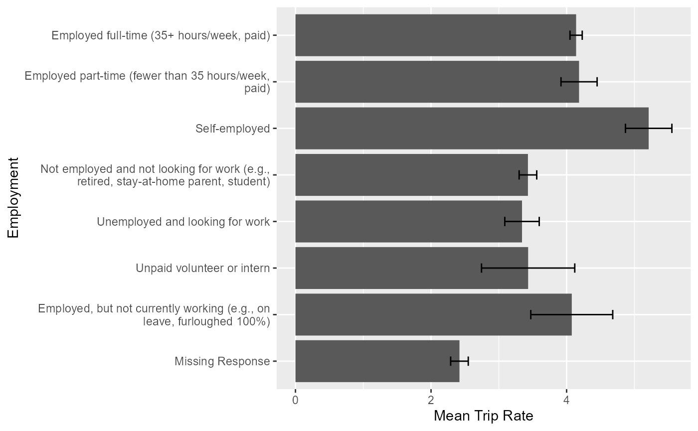

Getting Started
getting_started.RmdAbout TravelSurveyTools
The travelSurveyTools package provides tools for R users
to aid use of data from household travel surveys. Some possible uses
include creating custom cross tabs, labeling data, and calculating trip
rates.
Data Assumptions
travelSurveyTools assumes the the data have the
structure shown below. If this does not reflect the structure of your
data
hts_data
hts_data is a list of five core tables:
hh
Household dataset
- hh_id: 8 digit household ID
- survey variables asked on a household level
- hh_weight: household weight
person
Person dataset
- hh_id: 8 digit household ID
- person_id: 10 digit person ID
- survey variables asked on a person level
- person_weight: person weight
day
Day dataset
- hh_id: 8 digit household ID
- person_id: 10 digit person ID
- day_id: 12 digit day ID
- survey variable asked on a day level
- day_weight: day weight
Codebook
In addition to data from the household travel survey. The codebook is also required. The codebook is assumed to be in two parts:
variable_list
A dataset containing information about all variables existing in the hh, person, day, trip, and vehicle tables. The variables are as follows:
- variable: Name of the variable
- is_checkbox: The variable is a ‘Select all that Apply’ question
- hh: The variable exists in the hh table
- person: The variable exists in the person table
- day: The variable exists in the day table
- trip: The variable exists in the trip table
- vehicle: The variable exists in the vehicle table
- location: The variable exists in the location table
- data_type: Data type of the variable
- description: A description of the variable
- logic: Conditions where the variable should have a value
- shared_name: the shared name of checkbox variable or the variable name for non-checkbox variables
value_labels
A dataset containing the values for all variables found in variable_list The variables are as follows:
- variable: Name of the variable
- value: The numeric value of the variable
- label: What the numeric value of the variable represents
- label_value: value concatenated with the label (e.g., 11 85 or older)
- val_order: order for each variable label to appear in
Using travelSurveyTools
Prepping the Data
In order to create summaries of our data we first need to prepare our
data. We can do this by using hts_prep_data. This will
return a categorical (cat) and numeric (num) (if applicable) prepped
data table that can be used to create summaries.
library(travelSurveyTools)
library(data.table)
library(srvyr)
# Load data
data("test_data")
data("variable_list")
DT = hts_prep_data(summarize_var = 'speed_mph',
variables_dt = variable_list,
data = test_data)Numeric variables will be automatically binned in
hts_prep_data to create categorical summaries. Here we can
make a categorical summary of a numeric variable using
hts_summary.
speed_cat_summary = hts_summary(prepped_dt = DT$cat,
summarize_var = 'speed_mph',
summarize_by = NULL,
summarize_vartype = 'categorical',
weighted = FALSE)
speed_cat_summary$summary## $unwtd
## speed_mph count prop
## 1: 1 or less 575 0.038244097
## 2: 1-9 6537 0.434785500
## 3: 9-17 3661 0.243498503
## 4: 17-25 2249 0.149584303
## 5: 25-33 1012 0.067309611
## 6: 33-41 533 0.035450615
## 7: 41-43 76 0.005054872
## 8: 43 or more 392 0.026072498Additionally, for numeric variables we can create numeric summaries.
speed_num_summary = hts_summary(prepped_dt = DT$num,
summarize_var = 'speed_mph',
summarize_by = NULL,
summarize_vartype = 'numeric',
weighted = FALSE)
speed_num_summary$summary## $unwtd
## count min max mean median
## 1: 15035 0 109.2184 12.89507 9.728796Using Weighted Data
Additionally, we can use weighted data by setting
weighted = TRUE and specifying the name of the weight to be
used (wtname).
speed_cat_summary = hts_summary(prepped_dt = DT$cat,
summarize_var = 'speed_mph',
summarize_by = NULL,
summarize_vartype = 'categorical',
weighted = TRUE,
wtname = 'trip_weight')
speed_cat_summary$summary## $unwtd
## speed_mph count prop
## 1: 1 or less 575 0.038244097
## 2: 1-9 6537 0.434785500
## 3: 9-17 3661 0.243498503
## 4: 17-25 2249 0.149584303
## 5: 25-33 1012 0.067309611
## 6: 33-41 533 0.035450615
## 7: 41-43 76 0.005054872
## 8: 43 or more 392 0.026072498
##
## $wtd
## speed_mph count prop est
## 1: 1 or less 575 0.038596067 291500
## 2: 1-9 6537 0.433679180 3275398
## 3: 9-17 3661 0.243523176 1839229
## 4: 17-25 2249 0.151377218 1143289
## 5: 25-33 1012 0.067742784 511633
## 6: 33-41 533 0.034100916 257550
## 7: 41-43 76 0.005215169 39388
## 8: 43 or more 392 0.025765490 194596
##
## $weight_name
## [1] "trip_weight"Calculating Standard Errors
Additionally, by specifying se = TRUE we can calculate
standard errors.
speed_cat_summary = hts_summary(prepped_dt = DT$cat,
summarize_var = 'speed_mph',
summarize_by = NULL,
summarize_vartype = 'categorical',
weighted = TRUE,
wtname = 'trip_weight',
se = TRUE)
speed_cat_summary$summary## $unwtd
## speed_mph count prop
## 1: 1 or less 575 0.038244097
## 2: 1-9 6537 0.434785500
## 3: 9-17 3661 0.243498503
## 4: 17-25 2249 0.149584303
## 5: 25-33 1012 0.067309611
## 6: 33-41 533 0.035450615
## 7: 41-43 76 0.005054872
## 8: 43 or more 392 0.026072498
##
## $wtd
## speed_mph count prop prop_se est est_se
## 1: 1 or less 575 0.038596067 0.0018091628 291500 13731.043
## 2: 1-9 6537 0.433679180 0.0046545746 3275398 38298.012
## 3: 9-17 3661 0.243523176 0.0040290132 1839229 31595.081
## 4: 17-25 2249 0.151377218 0.0033752879 1143289 26070.445
## 5: 25-33 1012 0.067742784 0.0023796356 511633 18152.124
## 6: 33-41 533 0.034100916 0.0016840894 257550 12764.269
## 7: 41-43 76 0.005215169 0.0006874633 39388 5196.226
## 8: 43 or more 392 0.025765490 0.0014748922 194596 11170.619
##
## $weight_name
## [1] "trip_weight"Summarizing Two Variables
If we want summarize a variable by another variable (e.g., mode type
by a person’s race, mode_type by a person’s ethnicity) we can use the
summarize_by argument.
DT = hts_prep_data(summarize_var = 'mode_type',
summarize_by = 'race',
variables_dt = variable_list,
data = test_data)
mode_by_race_summary = hts_summary(prepped_dt = DT$cat,
summarize_var = 'mode_type',
summarize_by = 'race',
summarize_vartype = 'categorical',
weighted = TRUE,
wtname = 'trip_weight',
se = TRUE)
mode_by_race_summary$summary## $unwtd
## race mode_type count prop
## 1: African American or Black 1 146 0.3435294118
## 2: African American or Black 3 6 0.0141176471
## 3: African American or Black 4 2 0.0047058824
## 4: African American or Black 6 9 0.0211764706
## 5: African American or Black 7 7 0.0164705882
## 6: African American or Black 8 198 0.4658823529
## 7: African American or Black 10 1 0.0023529412
## 8: African American or Black 13 56 0.1317647059
## 9: American Indian or Alaska Native 1 15 0.1724137931
## 10: American Indian or Alaska Native 2 6 0.0689655172
## 11: American Indian or Alaska Native 3 1 0.0114942529
## 12: American Indian or Alaska Native 4 3 0.0344827586
## 13: American Indian or Alaska Native 5 1 0.0114942529
## 14: American Indian or Alaska Native 6 1 0.0114942529
## 15: American Indian or Alaska Native 8 58 0.6666666667
## 16: American Indian or Alaska Native 13 2 0.0229885057
## 17: Asian 1 738 0.2777568686
## 18: Asian 2 52 0.0195709447
## 19: Asian 3 4 0.0015054573
## 20: Asian 5 2 0.0007527286
## 21: Asian 6 17 0.0063981935
## 22: Asian 7 8 0.0030109146
## 23: Asian 8 1621 0.6100865638
## 24: Asian 11 36 0.0135491155
## 25: Asian 12 2 0.0007527286
## 26: Asian 13 170 0.0639819345
## 27: Asian 14 7 0.0026345502
## 28: Native Hawaiian or other Pacific Islander 1 4 0.1538461538
## 29: Native Hawaiian or other Pacific Islander 7 1 0.0384615385
## 30: Native Hawaiian or other Pacific Islander 8 21 0.8076923077
## 31: White 1 2355 0.2651728409
## 32: White 2 238 0.0267987839
## 33: White 3 6 0.0006755996
## 34: White 4 12 0.0013511992
## 35: White 5 1 0.0001125999
## 36: White 6 31 0.0034905979
## 37: White 7 49 0.0055173967
## 38: White 8 5781 0.6509402094
## 39: White 11 29 0.0032653980
## 40: White 12 6 0.0006755996
## 41: White 13 351 0.0395225763
## 42: White 14 22 0.0024771985
## 43: Two or more 1 298 0.3333333333
## 44: Two or more 2 31 0.0346756152
## 45: Two or more 4 6 0.0067114094
## 46: Two or more 6 10 0.0111856823
## 47: Two or more 7 3 0.0033557047
## 48: Two or more 8 486 0.5436241611
## 49: Two or more 11 2 0.0022371365
## 50: Two or more 13 57 0.0637583893
## 51: Two or more 14 1 0.0011185682
## 52: Other race 1 68 0.2289562290
## 53: Other race 2 2 0.0067340067
## 54: Other race 3 1 0.0033670034
## 55: Other race 5 1 0.0033670034
## 56: Other race 6 2 0.0067340067
## 57: Other race 7 2 0.0067340067
## 58: Other race 8 207 0.6969696970
## 59: Other race 10 1 0.0033670034
## 60: Other race 11 3 0.0101010101
## 61: Other race 13 9 0.0303030303
## 62: Other race 14 1 0.0033670034
## 63: Prefer not to answer 1 335 0.3199617956
## 64: Prefer not to answer 2 30 0.0286532951
## 65: Prefer not to answer 4 1 0.0009551098
## 66: Prefer not to answer 6 7 0.0066857689
## 67: Prefer not to answer 7 6 0.0057306590
## 68: Prefer not to answer 8 602 0.5749761223
## 69: Prefer not to answer 11 10 0.0095510984
## 70: Prefer not to answer 12 2 0.0019102197
## 71: Prefer not to answer 13 51 0.0487106017
## 72: Prefer not to answer 14 3 0.0028653295
## race mode_type count prop
##
## $wtd
## race mode_type count prop
## 1: African American or Black 1 146 0.3206082080
## 2: African American or Black 3 6 0.0107459127
## 3: African American or Black 4 2 0.0041393818
## 4: African American or Black 6 9 0.0137559316
## 5: African American or Black 7 7 0.0145217657
## 6: African American or Black 8 198 0.4948063845
## 7: African American or Black 10 1 0.0037370765
## 8: African American or Black 13 56 0.1376853391
## 9: American Indian or Alaska Native 1 15 0.1974696041
## 10: American Indian or Alaska Native 2 6 0.0400602723
## 11: American Indian or Alaska Native 3 1 0.0202899304
## 12: American Indian or Alaska Native 4 3 0.0235633378
## 13: American Indian or Alaska Native 5 1 0.0024680453
## 14: American Indian or Alaska Native 6 1 0.0193806505
## 15: American Indian or Alaska Native 8 58 0.6717759534
## 16: American Indian or Alaska Native 13 2 0.0249922062
## 17: Asian 1 738 0.2789376086
## 18: Asian 2 52 0.0189774065
## 19: Asian 3 4 0.0014666344
## 20: Asian 5 2 0.0007958073
## 21: Asian 6 17 0.0067669971
## 22: Asian 7 8 0.0022180211
## 23: Asian 8 1621 0.6087210541
## 24: Asian 11 36 0.0120379970
## 25: Asian 12 2 0.0003847280
## 26: Asian 13 170 0.0672235059
## 27: Asian 14 7 0.0024702400
## 28: Native Hawaiian or other Pacific Islander 1 4 0.1349855482
## 29: Native Hawaiian or other Pacific Islander 7 1 0.0455691532
## 30: Native Hawaiian or other Pacific Islander 8 21 0.8194452986
## 31: White 1 2355 0.2655078324
## 32: White 2 238 0.0251267505
## 33: White 3 6 0.0010892466
## 34: White 4 12 0.0013090206
## 35: White 5 1 0.0001260008
## 36: White 6 31 0.0037900948
## 37: White 7 49 0.0057758941
## 38: White 8 5781 0.6496135155
## 39: White 11 29 0.0034543911
## 40: White 12 6 0.0007924845
## 41: White 13 351 0.0410129210
## 42: White 14 22 0.0024018481
## 43: Two or more 1 298 0.3263455892
## 44: Two or more 2 31 0.0334006119
## 45: Two or more 4 6 0.0064789456
## 46: Two or more 6 10 0.0098414086
## 47: Two or more 7 3 0.0014165830
## 48: Two or more 8 486 0.5492301036
## 49: Two or more 11 2 0.0014363493
## 50: Two or more 13 57 0.0710927016
## 51: Two or more 14 1 0.0007577072
## 52: Other race 1 68 0.2326643663
## 53: Other race 2 2 0.0102063750
## 54: Other race 3 1 0.0053014979
## 55: Other race 5 1 0.0034902630
## 56: Other race 6 2 0.0090561747
## 57: Other race 7 2 0.0080117400
## 58: Other race 8 207 0.6920503973
## 59: Other race 10 1 0.0020359867
## 60: Other race 11 3 0.0049114875
## 61: Other race 13 9 0.0275320932
## 62: Other race 14 1 0.0047396185
## 63: Prefer not to answer 1 335 0.3192662664
## 64: Prefer not to answer 2 30 0.0335535995
## 65: Prefer not to answer 4 1 0.0004117006
## 66: Prefer not to answer 6 7 0.0052765665
## 67: Prefer not to answer 7 6 0.0064833403
## 68: Prefer not to answer 8 602 0.5734252924
## 69: Prefer not to answer 11 10 0.0074823752
## 70: Prefer not to answer 12 2 0.0027478183
## 71: Prefer not to answer 13 51 0.0507166046
## 72: Prefer not to answer 14 3 0.0006364363
## race mode_type count prop
## prop_se est est_se
## 1: 0.0259537611 66145 6376.2732
## 2: 0.0050918410 2217 1054.2330
## 3: 0.0039870468 854 824.5438
## 4: 0.0053457674 2838 1106.2381
## 5: 0.0068402244 2996 1421.5977
## 6: 0.0282676793 102084 8315.3979
## 7: 0.0037292003 771 771.0000
## 8: 0.0198052743 28406 4407.6486
## 9: 0.0509371268 7601 2185.3628
## 10: 0.0172849923 1542 662.1635
## 11: 0.0200446356 781 781.0000
## 12: 0.0191960318 907 747.4494
## 13: 0.0024823352 95 95.0000
## 14: 0.0191641795 746 746.0000
## 15: 0.0591889530 25858 4113.2269
## 16: 0.0181764211 962 706.5000
## 17: 0.0100467368 370488 15423.1820
## 18: 0.0029809671 25206 3990.0163
## 19: 0.0008007467 1948 1064.1053
## 20: 0.0007018961 1057 932.6670
## 21: 0.0018869627 8988 2514.1670
## 22: 0.0009453916 2946 1256.4991
## 23: 0.0109229308 808510 22137.1754
## 24: 0.0024093640 15989 3216.3137
## 25: 0.0003721183 511 494.2912
## 26: 0.0056638533 89287 7760.0861
## 27: 0.0010544753 3281 1401.8417
## 28: 0.0749889884 2195 1316.3052
## 29: 0.0445310760 741 741.0000
## 30: 0.0837539211 13325 3142.8635
## 31: 0.0053989102 1186349 26346.1038
## 32: 0.0018861324 112272 8480.5606
## 33: 0.0004528082 4867 2024.1720
## 34: 0.0004198524 5849 1876.4544
## 35: 0.0001259987 563 563.0000
## 36: 0.0007575376 16935 3388.4358
## 37: 0.0009320051 25808 4171.0624
## 38: 0.0058333760 2902620 36716.7654
## 39: 0.0007141565 15435 3193.8863
## 40: 0.0003794695 3541 1696.0896
## 41: 0.0024371289 183255 11016.7078
## 42: 0.0006122842 10732 2737.7953
## 43: 0.0180401259 148592 9927.8437
## 44: 0.0067877296 15208 3138.8343
## 45: 0.0029437491 2950 1344.0455
## 46: 0.0035068104 4481 1602.8031
## 47: 0.0009070981 645 412.8242
## 48: 0.0191501600 250076 12814.8919
## 49: 0.0010191795 654 464.0056
## 50: 0.0102582575 32370 4852.8413
## 51: 0.0007577207 345 345.0000
## 52: 0.0282510583 35197 4870.4252
## 53: 0.0072147507 1544 1097.7284
## 54: 0.0052853959 802 802.0000
## 55: 0.0034859978 528 528.0000
## 56: 0.0063777152 1370 969.2020
## 57: 0.0059994472 1212 911.2351
## 58: 0.0308378894 104692 8371.7820
## 59: 0.0020364613 308 308.0000
## 60: 0.0040889752 743 619.5944
## 61: 0.0107440950 4165 1646.9495
## 62: 0.0047278937 717 717.0000
## 63: 0.0164453303 169055 10453.6018
## 64: 0.0066740647 17767 3597.7574
## 65: 0.0004118019 218 218.0000
## 66: 0.0024616726 2794 1306.4509
## 67: 0.0028226612 3433 1499.1887
## 68: 0.0174747900 303635 13881.5190
## 69: 0.0028594361 3962 1518.6785
## 70: 0.0019719853 1455 1045.7311
## 71: 0.0079047276 26855 4294.9876
## 72: 0.0003924639 337 207.5863
## prop_se est est_se
##
## $weight_name
## [1] "trip_weight"summarize_by can be used with an unlimited amount of
variables. To use more than one summarize_by variable pass
a list to the argument.
DT = hts_prep_data(summarize_var = 'mode_type',
summarize_by = c('race', 'ethnicity'),
variables_dt = variable_list,
data = list('hh' = hh,
'person' = person,
'day' = day,
'trip' = trip,
'vehicle' = vehicle))
mode_by_race_ethnicity_summary = hts_summary(prepped_dt = DT$cat,
summarize_var = 'mode_type',
summarize_by = c('race', 'ethnicity'),
summarize_vartype = 'categorical',
weighted = TRUE,
wtname = 'trip_weight',
se = TRUE)
head(mode_by_race_ethnicity_summary$summary$wtd, 10)## race ethnicity
## 1: African American or Black Not of Hispanic, Latino, or Spanish origin
## 2: African American or Black Not of Hispanic, Latino, or Spanish origin
## 3: African American or Black Not of Hispanic, Latino, or Spanish origin
## 4: African American or Black Not of Hispanic, Latino, or Spanish origin
## 5: African American or Black Not of Hispanic, Latino, or Spanish origin
## 6: African American or Black Not of Hispanic, Latino, or Spanish origin
## 7: African American or Black Not of Hispanic, Latino, or Spanish origin
## 8: African American or Black Mexican, Mexican American, Chicano
## 9: African American or Black Mexican, Mexican American, Chicano
## 10: African American or Black Another Hispanic, Latino, or Spanish origin
## mode_type count prop prop_se est est_se
## 1: 1 90 0.264970857 0.028499372 39323 4832.3611
## 2: 3 2 0.005410869 0.003897870 803 579.0884
## 3: 4 2 0.005754523 0.005537463 854 824.5438
## 4: 6 4 0.008362252 0.005232930 1241 778.6512
## 5: 7 5 0.014285233 0.007603062 2120 1135.6655
## 6: 8 179 0.618166504 0.031974249 91739 7882.9544
## 7: 13 24 0.083049762 0.018892303 12325 2933.8872
## 8: 3 4 0.746962493 0.203291398 1414 881.0349
## 9: 8 2 0.253037507 0.203291398 479 419.9015
## 10: 1 2 0.182176268 0.159601009 740 697.3863Calculating trip rates
hts_summary can also be used to calculate trip
rates.
DT = hts_prep_triprate(summarize_by = 'employment',
variables_dt = variable_list,
trip_name = 'trip',
day_name = 'day',
hts_data = list('hh' = hh,
'person' = person,
'day' = day,
'trip' = trip,
'vehicle' = vehicle))
trip_rate_by_employment_summary = hts_summary(prepped_dt = DT$num,
summarize_var = 'num_trips_wtd',
summarize_by = 'employment',
summarize_vartype = 'numeric',
weighted = TRUE,
wtname = 'day_weight',
se = TRUE)
head(trip_rate_by_employment_summary$summary$wtd, 10)## employment count min max mean mean_se median
## 1: 1 2012 0 59.17021 3.817292 0.0871695 2.478363
## 2: 2 307 0 54.24561 3.795345 0.2380826 2.414773
## 3: 3 189 0 54.81752 4.128966 0.2921698 3.361946
## 4: 5 899 0 57.84615 3.629484 0.1354622 2.154110
## 5: 6 181 0 48.29293 3.411580 0.2988906 1.842215
## 6: 7 37 0 44.70815 3.686618 0.7769508 2.448465
## 7: 8 24 0 24.23790 2.513073 0.6037672 1.613707
## 8: 995 568 0 58.38776 2.000315 0.1028051 1.146023Labeling Values
To label values we can use factorize_column.
trip_rate_by_employment_summary$summary$wtd$employment = factorize_column(
trip_rate_by_employment_summary$summary$wtd$employment,
'employment',
value_labels,
variable_colname = 'variable',
value_colname = 'value',
value_label_colname = 'label',
value_order_colname = 'val_order'
)
trip_rate_by_employment_summary$summary$wtd## employment
## 1: Employed full-time (35+ hours/week, paid)
## 2: Employed part-time (fewer than 35 hours/week, paid)
## 3: Self-employed
## 4: Not employed and not looking for work (e.g., retired, stay-at-home parent, student)
## 5: Unemployed and looking for work
## 6: Unpaid volunteer or intern
## 7: Employed, but not currently working (e.g., on leave, furloughed 100%)
## 8: Missing Response
## count min max mean mean_se median
## 1: 2012 0 59.17021 3.817292 0.0871695 2.478363
## 2: 307 0 54.24561 3.795345 0.2380826 2.414773
## 3: 189 0 54.81752 4.128966 0.2921698 3.361946
## 4: 899 0 57.84615 3.629484 0.1354622 2.154110
## 5: 181 0 48.29293 3.411580 0.2988906 1.842215
## 6: 37 0 44.70815 3.686618 0.7769508 2.448465
## 7: 24 0 24.23790 2.513073 0.6037672 1.613707
## 8: 568 0 58.38776 2.000315 0.1028051 1.146023Creating Visuals using hts_summary output
hts_summary creates outputs that can easily be used to
create visuals.
library(ggplot2)
p = ggplot(
trip_rate_by_employment_summary$summary$wtd,
aes(x = mean, y = employment)) +
geom_bar(stat = 'identity') +
geom_errorbar(
aes(xmin = (mean - mean_se),
xmax = (mean + mean_se),
width = .2)
) +
labs(x = 'Mean Trip Rate',
y = 'Employment') +
scale_y_discrete(labels = function(x) stringr::str_wrap(x, width = 50),
limits = rev)
print(p)